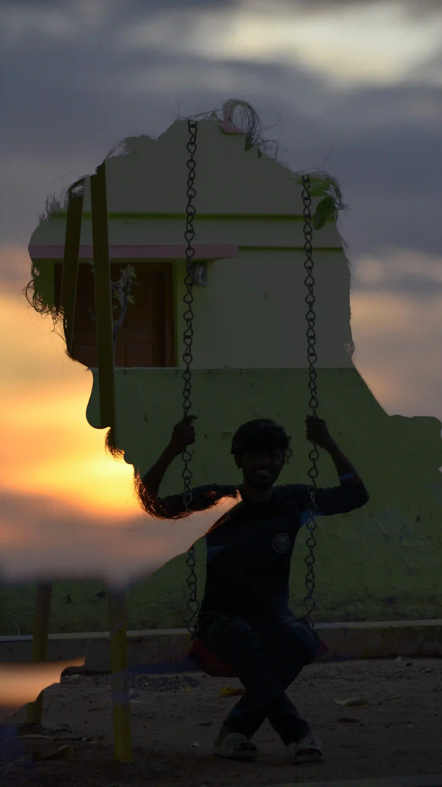
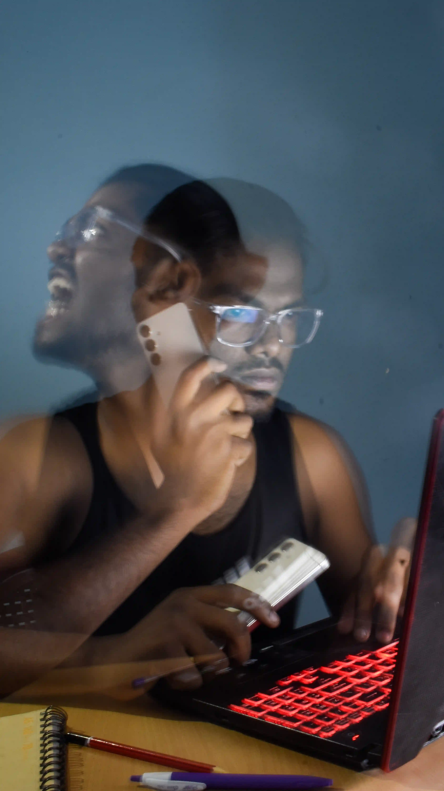
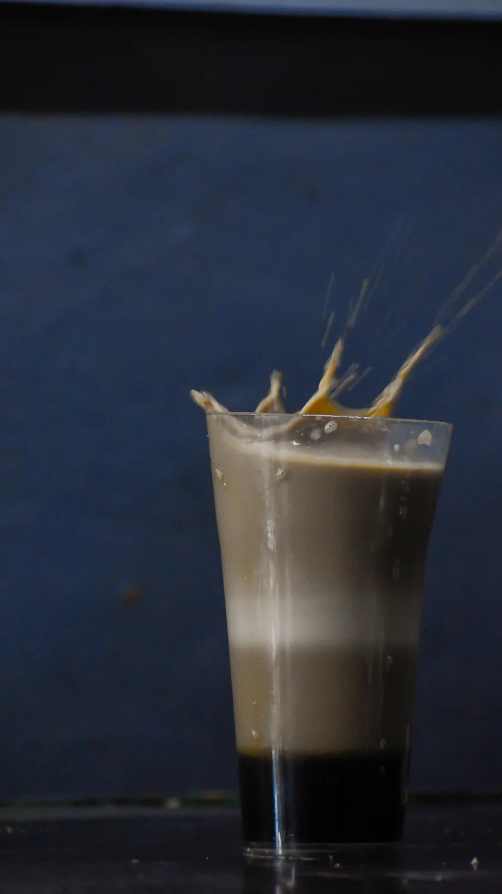
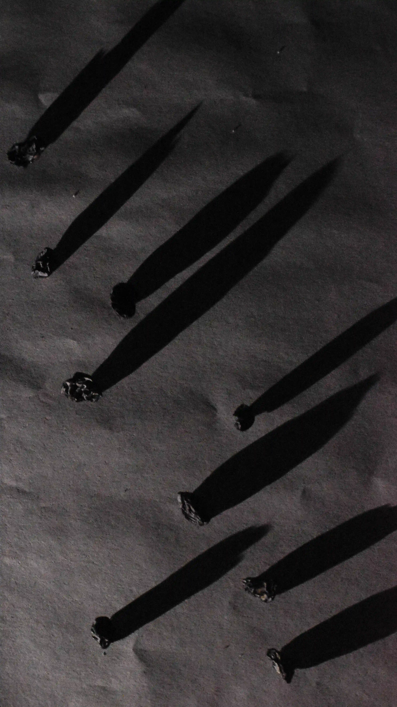
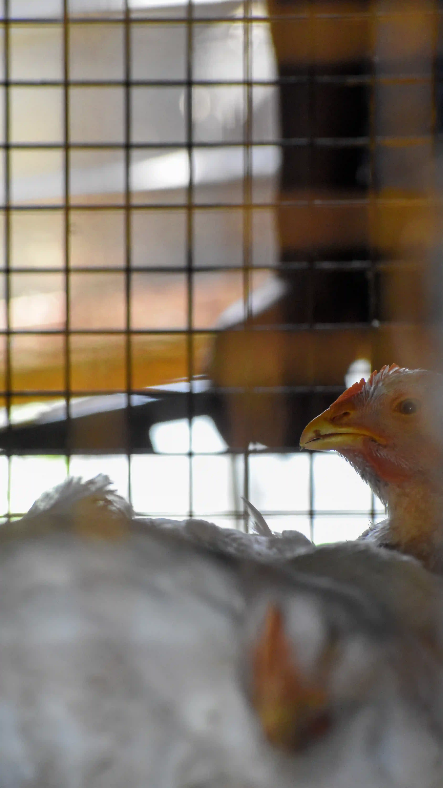

IFP 50-Hour Photography Challenge
India Film Project, 2025
For more than a decade, the India Film Project’s 50-Hour Challenge has brought together thousands of creators in a race against time. Participants are given a theme at 8 PM on Friday and exactly 50 hours to create, complete, and submit a body of work.
Having participated twice before without the outcome I hoped for, I returned in 2025 for a third attempt—determined to make it through. Fifty hours later, among several thousand entries, this five-part photographic series was selected as one of the Top 10 Finalists.

The Duality
As a grown man, I face life with calm and composure, handling most situations with maturity. Yet my inner child longs for freedom, and when that carefree spirit awakens, it experiences pure, instant joy. In this double exposure photograph, I’ve symbolized that exact moment—my composed, solid adult self on the outside, while inside, my playful, carefree version swings with happiness.

The Mental Prison
A man trapped in the maze of his own mind—caught between work pressures, personal struggles, and the weight of his mental health. Yet, he moves forward, entangled in the routines that keep him confined. This image captures that moment of being lost, yet persisting, in the maze of life.

The Layer Tea
Layer tea—a marvel from a small roadside shop in Coimbatore, not a star hotel kitchen. In one glass, coffee, milk, tea, and Boost rest as distinct layers, never mixing yet coexisting. The arrangement makes the whole ordeal unlikely companions, where each sip lets you savor every taste in order. A simple glass, holding an extraordinary surprise.

Hide and Seek
At first glance, they seem like falling meteors streaking across the sky. In reality, they are scattered black raisins, transformed by angled light into a rhythmic play of shadow and form. What is ordinary becomes extraordinary—a hidden pattern revealed only when seen differently.

The Butcher’s Knife
The chickens sit calm and composed in the cage, unaware of what’s about to come. The moment the butcher’s hand reaches in, panic sets in—they run frantically inside, turning stillness into pure chaos. This frame captures that precise pause, the fragile silence just before everything unravels.